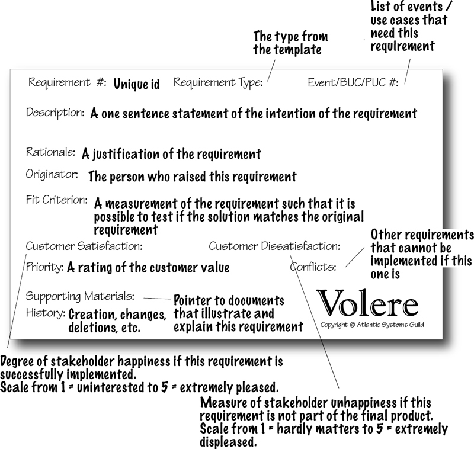

Example force field analysis
Project Life Cycle (PLC) per Watt (2014):
Systems Development Lifecycle (SDLC) per Annabi and McGann (2014), with my additions bracketed:
Agile:
PESTEL, Porter's five, and SWOT/SLOT analyses are more common in the context of organizational strategic planning, but can also be scoped for projects.
Systematic review of the broadest trends and forces that constitute the business environment, to identify the implications for organizational strategy (since projects should be related to an organization's strategic goals):
Framework for evaluating the intensity of competition in a specific market or industry, which may have implications for whether a project is worth undertaking or may point to profitable niches:
Framework for making connections between a company's external landscape and internal characteristics (which can be restricted to the scope of a single project). Data is collected and sorted into a matrix, with one matrix for each alternative under consideration:
Also called need-gap analysis, need analysis, or need assessment. Gap analysis is a way of ensuring that planned actions align with objectives and present a reasonable pathway from the current reality to the desired state. The 5 whys or fishbone/Ishikawa/cause-and-effect diagrams may be useful in analyzing the current reality to identify possible actions.
| Objective | Reality | Action |
|---|---|---|
| 12 widgets daily | 2 widgets | Hire more workers |
The general aim is to identify stakeholders; analyze their interests and expectations; categorize interests and expectations based on importance and level of stakeholder influence; and develop an action plan that delimits roles for different stakeholders.
Different authors present different stakeholder typologies. Per Leffingwell (2010):
Two typologies per Rabinowitz (n.d.):
| Low interest | High interest | |
|---|---|---|
| High influence | Latents | Promoters |
| Low influence | Apathetics | Defenders |
Once identified, decisions must be made about levels of stakeholder involvement. A RACI plan can capture stakeholder roles as well as roles for those involved in executing the project. Per Kantor (2012):
Facilitates organizational change by enumerating the forces that help or hinder an organization's ability to make change (note that individual people may constitute a force).
Example force field analysis
Overall, a business case must clearly outline a problem and a solution. If it's a proposal (meaning you must convince someone to hire you), you also need to demonstrate your credibility and capacity to deliver the solution.
Per Tom Sant as summarized by Obuchowski (2015):
| Problem with business proposal | Remedy |
|---|---|
| Failure to focus on the client’s business problems and payoffs; the content sounds generic. | Research the client |
| No clear differentiation of this customer compared with other customers. | |
| Failure to offer a compelling value proposition and clear solution. | |
| No persuasive structure --- the proposal is an "information dump". | Use structuring devices and simple language |
| Key points are difficult to read because they’re full of jargon, too long, or too technical. | |
| Key points are buried --- no punch, no highlighting. | |
| Credibility killers --- misspellings, grammar and punctuation errors, use of the wrong client’s name, inconsistent formatting, and similar mistakes. | Proofread |
Per Clayton (2003):
Per Hill & Cantera (2015):
Per Sheen (2015), scope creep is pervasive. Scope should be clearly addressed during the project initiation phase by (1) listing what's in and out of scope, provided stakeholders agree about scope; or (2) establishing scope ranges AKA scope tolerance parameters, which can be pinpointed as information emerges. A task is out of scope if it (1) doesn't make a direct contribution to the project goal, or (2) if time and money are binding constraints. Project the impact of requested additional tasks; never simply agree to perform them.
In the traditional "serial" or lifecycle project management approach, requirements are translated into deliverables, deliverables are translated into a work breakdown structure (WBS), and the WBS is translated into a schedule and budget. Per Ambler (n.d.), about two-thirds of requirements elicited in this way lead to features that are never or rarely used, i.e. "spectacular levels of waste". In response, Agile tries to match development processes to the realities of constantly shifting requirements using:
Per Collella (2009), effective organizational communication requires a communications strategy, which includes (1) a core message that is not burdened with IT jargon, (2) the capacity to refine messages in response to stakeholder cues, and (3) assessment; a communications plan for institutionalizing and executing the strategy; and communication delivery skills.
Per PMI (2013):
Per Wikipedia (2017), a work breakdown structure (WBS) is a hierarchical decomposition of a project's total work. WBS elements are coded as 1.0, 1.1, 1.10.11, etc. Child elements must sum to 100% of their parent element, and so on until 100% of the project's total work is accounted for. Elements must be mutually exclusive, which is easier to accomplish if elements are outcomes, not tasks. There are different heuristics for establishing the terminal granularity of a WBS:
Once the hierarchy is established, terminal elements are budgeted and scheduled.
Designs must emerge from in-depth analysis of stakeholder (not just user) needs; requirements determination is the process of eliciting, analyzing, and synthesizing stakeholder needs. Dennis et al. (2012) note that the analysis and design phases of a system implementation effort are very closely linked. That is, the product/s of requirements determination are "initial designs". They also note that requirements are expressed first as business requirements (from the perspective of stakeholders, including users), second as system requirements (from the perspective of developers).
Requirements are also categorized as functional (what business tasks a system must perform) and nonfunctional (operational, performance, security, cultural and political requirements that affect how tasks are performed, and may arise from regulations such as Sarbanes-Oxley or the desire to comply with standards such as COBIT, ISO 9000, and the Capability Maturity Model). Per StackExchange answers, is important to differentiate functional from nonfunctional requirements because:
Per Whitney (n.d.), good requirements are:
Per Avison and Fitzger (2006) qtd. in Dennis et al. (2012), common problems with requirements determination are:
Per Dennis et al. (2012), a requirements determination process may begin with current state analysis, yielding models of the as-is system (see notes on system, process, and interface modeling techniques that are used to characterize the current states of the system). This, however, depends on:
The methodology used by the systems development team: "Users of traditional design methods such as waterfall and parallel development (see Chapter 1) typically spend significant time understanding the as-is system and identifying improvements before moving to capture requirements for the to-be system. However, newer RAD, agile, and object-oriented methodologies, such as phased development, prototyping, throwaway prototyping, extreme programming, and Scrum (see Chapter 1) focus almost exclusively on improvements and the to-be system requirements."
The context of the system being developed:
The amount of system change desired, i.e. BPA vs. BPI vs. BPR (see notes on process improvement for definitions and associated methods). The amount of change desired and amount of effort spent analyzing the as-is system are inversely related.
Per Dennis et al. (2012), requirements may be obtained from users, domain experts, existing processes, existing documents, and competing software using the following techniques (and see notes on qualitative methods):
Per Whitney (n.d.) and Dennis et al. (2012), once gathered requirements may be expressed using a concept map, requirements trace matrix (table format), or various card formats, which include:

Requirements are often analyzed by grouping them into use cases. Per Whitney (n.d.), "Use cases integrate the requirements into a comprehensive package that describes the interaction of the user with the system ... The Use Case should describe the interaction between the actor and the system - what the actor does and how the system reacts." Note that actors include other software as well as people. Use cases are expressed textually (also called a requirements definition report), usually including these elements:
See notes on system & process modeling techniques that are used to characterize the desired state of the to-be system, including (per Dennis et al., 2012):
See notes on BI architectures for information specific to selecting BI software.
General criteria to consider:
Ambler, S. (n.d.). Comparing approaches to budgeting and estimating software development projects. Retrieved from http://www.ambysoft.com/essays/comparingEstimatingApproaches.html
Annabi, H. & McGann, S. (2014). Unit 1---What is MIS? In The real deal on MIS.
Clayton, J. (2003). Writing an executive summary that means business. Harvard Management Communication Letter.
Collella, H. (2009). Effective communications: A strategy. Gartner.
Dennis, A., Haley Wixom, B., & Tegarden, D. (2012). Requirements determination. In Systems analysis and design: An object oriented approach with UML (4th ed., pp. 109–152). Hoboken, NJ: Wiley.
Hill, J. B., & Cantera, M. (2015). Use business outcomes to determine the scope of the “business process” to be improved (No. G00277312). Gartner.
Kantor, B. (2012, May 22). How to design a successful RACI project plan. CIO. Retrieved from http://www.cio.com/article/2395825/project-management/how-to-design-a-successful-raci-project-plan.html
Leffingwell, D. (2010). Stakeholders, user personas, and user experiences. In Agile software requirements: Lean requirements practices for teams, programs, and the enterprise. Boston, MA: Addison-Wesley Professional.
Obuchowski, J. (2005). A winning proposition: Crafting effective proposals. Harvard Management Communication Letter.
Project Management Institute (PMI). (2013). Communication: The message is clear.
Rabinowitz, P. (n.d.). Identifying and analyzing stakeholders and their interests. In Community Tool Box. Work Group for Community Health and Development at Kansas State University. Retrieved from http://ctb.ku.edu/en/table-of-contents/participation/encouraging-involvement/identify-stakeholders/main
Rigby, D. K. (2015). Management tools 2015: An executive’s guide. Boston, MA: Bain & Company.
Sheen, R. (2015). How to manage scope creep [video]. Harvard Business Review. Retrieved from https://hbr.org/video/2942763785001/how-to-manage-scope-creep
Watt, A. (2014). The project life cycle (phases). In Project Management. BCcampus Open Textbook Project. Retrieved from https://opentextbc.ca/projectmanagement/chapter/chapter-3-the-project-life-cycle-phases-project-management/
Whitney, E. (n.d.). Introduction to gathering requirements and creating use cases. Retrieved from http://www.codemag.com/Article/0102061
Wikipedia. (2017, March 28). Work breakdown structure. Retrieved from https://en.wikipedia.org/w/index.php?title=Work_breakdown_structure&oldid=772556888